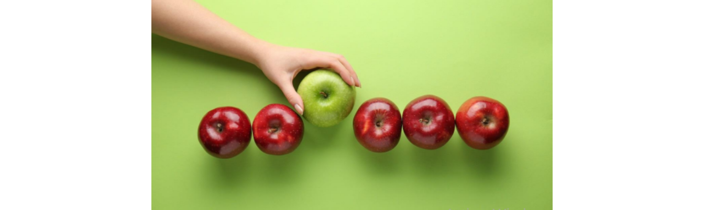
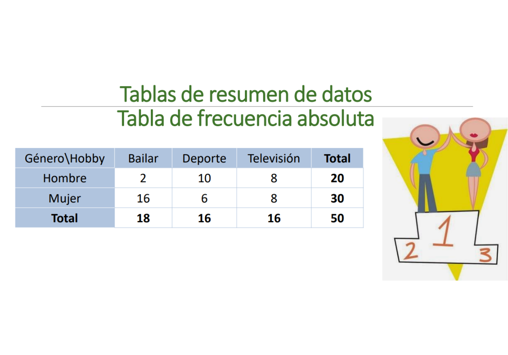
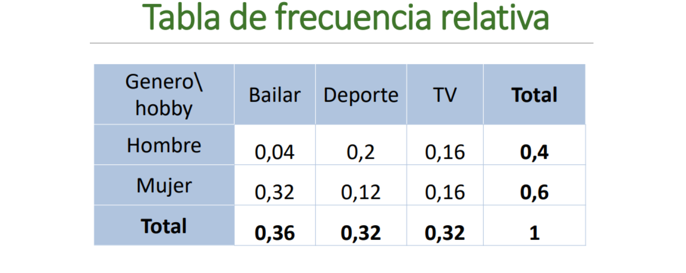
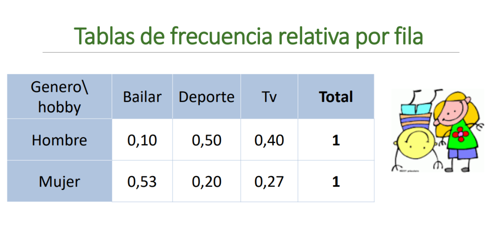

Ciencia que describe y realiza inferencias sobre el mundo desde una muestra de datos
Ciencia que proporciona metodologías para recolectar organizar, resumir, presentar y analizar datos y hacer inferencias a partir de ellos.
Ramas de la estadística
Estadística descriptiva: Organiza y describe las características de un conjunto de datos con el propósito de facilitar su aplicación, generalmente con el apoyo de gráficas, tablas o medidas numéricas.
Los parámetros estadísticos usados son las medidas de tendencia central y de variabilidad, y los gráficos de barras, de tortas y el histograma.
Estadística inferencial:
Obtiene conclusiones de la población partiendo de una muestra, por medio de diferentes métodos, como las puebas de hipótesis, pronósticos de futuras observaciones, correlaciones y modelos de asociación entre variables.
Población: Conjunto de elementos sobre los que queremos hacer afirmaciones
Parámetro: Valor descriptivo de la población
Estadístico: Valor descriptivo para una muestra
Base de datos: Colección de información organizada, de tal modo que sea fácilmente accesible, gestionada y actualizada
Punto atípico o outlier Son observaciones extremas, alejadas hacia valores muy grandes o pequeños comparadas con el resto de valores. Los valores atípicos pueden ser indicativos de datos que pertenecen a una población diferente del resto de las muestras establecidas. Se pueden detectar con un análisis descriptivo, mediante diagramas de dispersión, boxplot o histograma.

Muestra: conjunto de personas o cosas que se consideran representativos del grupo al que pertenecen, con la finalidad de estudiar o determinar las características del grupo.
Característica o condición que puede tomar diferentes valores en una muestra. Ejm:
Tipos de variables
Actividad
Clasifique las siguiente variables según sea el caso
| variable | tipo de variable | clasificación | niveles |
|---|---|---|---|
| Color de ojos | Cualitativa | Nominal | verde, azul,cafe |
| Edad | |||
| velocidad | |||
| Estado civil | |||
| Color de la piel | |||
| Color del cabello | |||
| Marcas de carro | |||
| Número de hijos de una familia | |||
| Número de mensajes enviados por whatsap un dia | |||
| Número de estudiantes conectados a clase | |||
| Días de la semana |
La frecuencia es el número de veces en que un evento se repite durante un experimento, comúnmente, la distribución de la frecuencia suele visualizarse con el uso de histogramas.
Tablas de frecuencia
Se pueden construir tablas de frecuencia para variables culitativas y cuantitativas, con la frecuencia absoluta y la frecuencia relativa
Frecuencia absoluta: Es el conteo o número de veces que sucede un evento en un experimento
Frecuencia relativa Es el porcentaje o proporción de veces que sucede un evento en un experimento, se calcula así:
\[X_i=\frac{xi}{N}=\frac{veces\quad que \quad se \quad observa}{Total \quad de \quad veces}\]
Además de las tablas de frecuencia también podemos enontrar tablas de doble entrada o tablas de contngencia, donde se pueden relacionar dos variables cualitativas, con sus diferentes niveles.
Ejemplo
Se analiza el hobbie (Bailar, Ver TV, Deporte) y el género (Femenino y masculino) y se realiza una tabla de doble entrada:

Esta tabla tiene varias formas posibles de ser analizada
Tabla de frecuencia relativa total
Cada observación se divide por el número total.

Tabla de frecuencia relativa por filas
Cada observación se divide por el total de la fila, esta forma sirve para comparar, en este caso, cuál es el deporte favorito de cada genero.

Tabla de frecuencia relativa por columnas
Cada observación se divide por el total de la columna, esta forma sirve para comparar, en este caso, cuál género prefiere cada uno de los deportes.
Video (ver hasta el minuto 9:20, lo siguiente es de probabilidades)